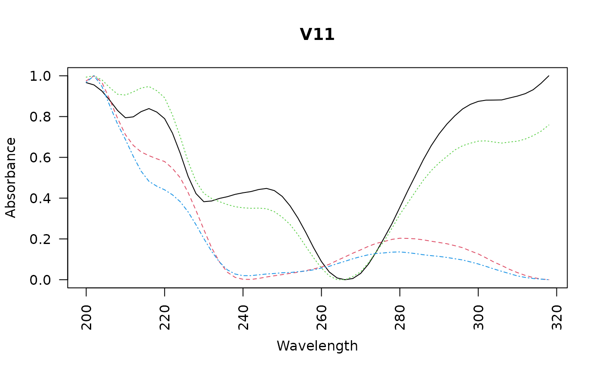

Plot the spectra of a peak from several chromatograms. Wrapper for
plot_spectrum.
Arguments
- loc
The peak, retention time, or scan index from which to extract spectral data.
- peak_table
A
peak_tableobject created byget_peaktable.- chrom_list
A list of chromatograms in matrix format (timepoints × wavelengths). If no argument is provided here, the function will try to find the
chrom_listobject using the pointer in thepeak_table.- idx
Vector of chromatograms to plot, or
"all"(the default).- engine
Plotting backend to use. One of
"base","ggplot", or"plotly"."ggplot2"is also accepted here, for backward compatibility, but"ggplot"is the spelling the other plotting functions take.- plot_spectrum
Logical. If
TRUE, plots the spectrum of the chosen peak. Defaults toTRUE.- export_spectrum
Logical. If
TRUE(the default), invisibly returns the spectra as adata.frame.- scale_spectrum
Logical. If
TRUE(the default), scales each spectrum to the range [0, 1].- overlapping
Logical. If
TRUE(the default), plots the spectra on a single plot. Used only whenengine = "base".- verbose
Logical. If
TRUE, prints the index and name of each chromatogram plotted, with its retention time, wavelength and absorbance. Defaults toFALSE.- what
What to look for. Either
"peak"to extract spectral information for a certain peak,"rt"to scan by retention time, or"idx"to scan by numeric index. Defaults to "peak" mode.- peak
The
peakargument is deprecated. Please uselocinstead.- ...
Additional arguments to
plot_spectrum.
Value
If
export_spectrum = TRUE(the default), invisibly returns adata.framewith wavelengths as rows and one column per sample encoding absorbance at each wavelength (normalized ifscale_spectrum = TRUE).If
export_spectrum = FALSE, returns aplotlyorggplotobject, or nothing ifengine == "base".
See also
Other visualization functions:
boxplot.peak_table(),
mirror_plot(),
plot.chrom_list(),
plot.matched_peak_list(),
plot.peak_list(),
plot.peak_table(),
plot_chrom_contour(),
plot_chroms(),
plot_chroms_heatmap(),
plot_spectrum(),
scan_chrom()
Examples
data(Sa_warp)
pks <- get_peaks(Sa_warp, lambda = "220")
pk_tab <- get_peaktable(pks)
plot_all_spectra(loc = "V11", peak_table = pk_tab, overlapping = TRUE)
